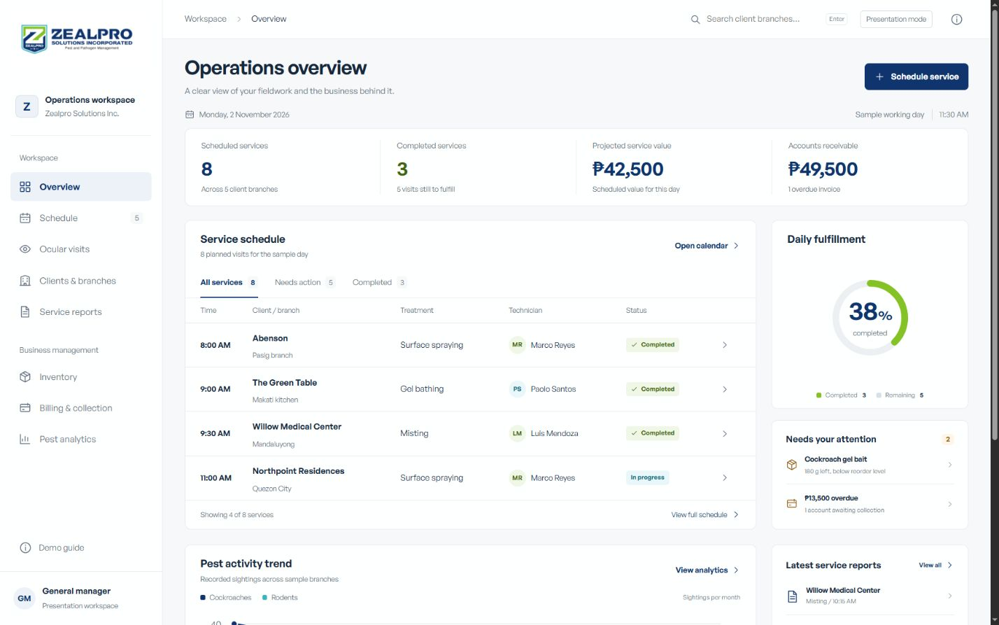
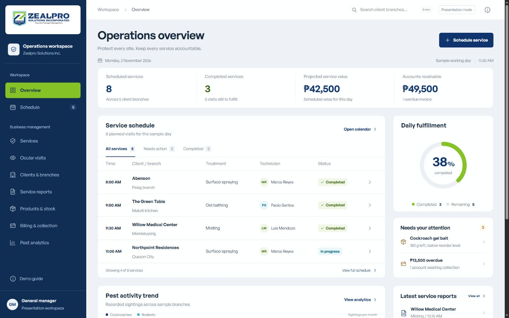

Before

After

The original and revised overviews retain the supplied logo and sample records. The revised system adds navy workspace framing, stronger readable hierarchy and lime selection. Calendar and catalog changes are documented in the revision QA report.

